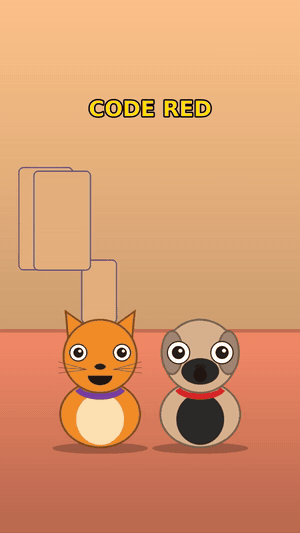

Free AI YouTube automation that makes the whole video
An open-source YouTube video generator. It writes the script, draws the scenes, records the voices, edits with FFmpeg, makes the thumbnail, writes the SEO and uploads to your own channel. It runs with zero API keys.
MIT licence · Windows, Linux and macOS · Python 3.10+

Complete YouTube automation, start to finish
idea → script → characters → images → video clips → voices → FFmpeg edit → thumbnail → SEO → your review → upload / schedule
Free AI video generator
YouTube Shorts in 9:16 and long videos in 16:9, rendered on your own computer.
Faceless channel friendly
Animated characters and AI voices. No camera and no microphone.
Script and ideas
Topic research, scored hooks and a scene-by-scene script you can edit.
Voiceover and editing
Free voices, captions, music and sound effects, edited automatically with FFmpeg.
Thumbnail and YouTube SEO
Thumbnail, ranked titles, description, tags, hashtags and chapters.
Upload and schedule
Connect your own channel. Uploads are private until you approve them.
Generate your first video in five steps
- Download the latest release and extract it.
- Install Python 3.10 or newer.
- Run
setup.baton Windows, or./setup.shon Linux and macOS. - Run
start.bator./start.sh. The dashboard opens athttp://localhost:8000. - Click Create today's video.
Full guide: INSTALL.md
Free by default, paid only if you choose
| Step | Free (default) | Optional paid |
|---|---|---|
| Script and SEO writing | Offline template writer | Anthropic Claude |
| Images | Storyboard frames, Pollinations | OpenAI, Stability AI, Replicate |
| Video clips | Ken Burns motion with FFmpeg | Runway, Luma, Replicate |
| Voices | Edge voices, system voices | ElevenLabs, OpenAI TTS |
| Editing, captions, thumbnails | FFmpeg and Pillow, all local | |
| Upload, schedule, analytics | YouTube Data API (free quota) |
Every paid run shows a cost estimate and waits for your approval.
Questions
Is this YouTube automation tool really free?
Yes. The code is MIT-licensed and the default providers cost nothing. Paid AI providers are optional, and every paid run asks for approval first.
Can I generate a complete YouTube video without any API key?
Yes. The free pipeline produces a finished MP4 with captions, voices, a thumbnail and the SEO text. A free YouTube API key is only needed for trend research, and a Google OAuth client only if you want the tool to upload for you.
Does it make YouTube Shorts or long videos?
Both. Short renders vertical 9:16 (1080×1920) and long renders horizontal 16:9 (1920×1080).
Can I use it for a faceless YouTube channel?
Yes. Videos use animated characters and AI voices, so no camera or microphone is involved.
Will it upload videos to my channel automatically?
Only if you turn that on. By default nothing is uploaded until you approve the video, and uploads are private.
Is AI-generated content allowed on YouTube?
YouTube allows AI-assisted videos but requires disclosure of realistic synthetic media and does not monetize mass-produced, repetitive content. Review what you publish and read YouTube's current policies.